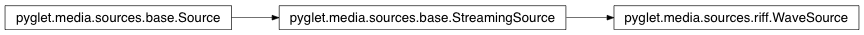

WaveSource Class¶
-
class
WaveSource(filename, file=None)¶ Attributes:
audio_formatdurationThe length of the source, in seconds. infois_queuedDetermine if this source has been queued on a Player yet. video_format
Inherited members¶
Attributes
WaveSource.audio_format= None
WaveSource.durationThe length of the source, in seconds.
Not all source durations can be determined; in this case the value is None.
Read-only.
Type: float
WaveSource.info= None
WaveSource.is_queuedDetermine if this source has been queued on a Player yet.
Read-only.
Type: bool
WaveSource.video_format= None